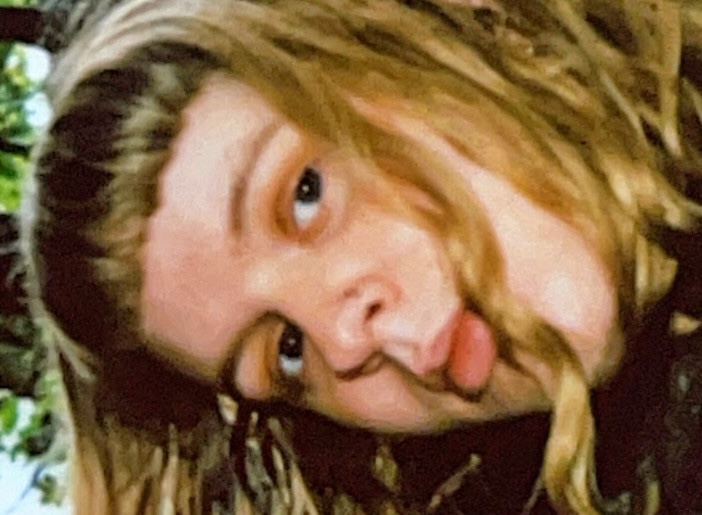
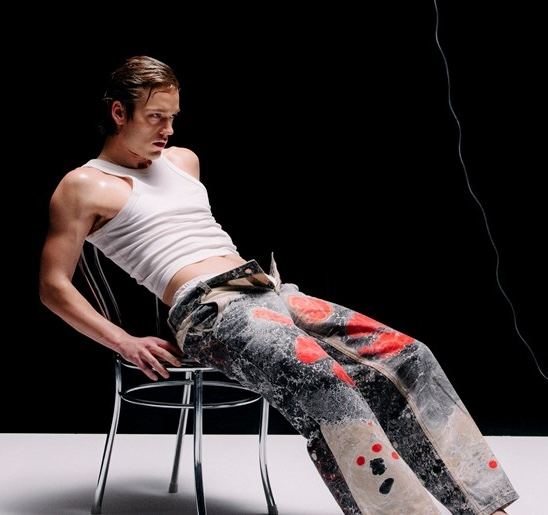

7. Marts - Reveal Party [SUPPORT: Merry]
Forvent en aften der hylder alt, hvad indierock, folk, midwest-emo og lo-fi-pop står for, med en fantastisk 90'er-inspireret og melankolsk queer-glød.

14. Marts - Asbjørn
Eksplosivt popbrag med polyrytmer, melankoli og elektronisk legesyge.
20. Marts - Open Mic
Træd op på scenen og del din stemme, dine ord eller din musik –
Open Mic på Radar er din chance for at opleve en aften fyldt med talent, nærvær og spontane øjeblikke i en varm og hyggelig atmosfære.